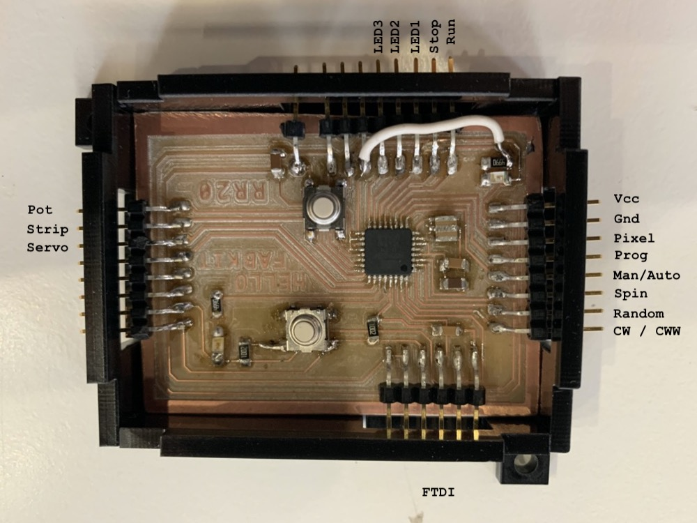

<!DOCTYPE html>
<html lang="en"></html>
<head>
  <meta charset="utf-8">
  <meta content="IE=edge" http-equiv="X-UA-Compatible">
  <meta content="width=device-width, initial-scale=1" name="viewport">
  <title> Rafael Rebolleda — Fab Academy 2020 Documentation</title>
  <!-- Google Fonts-->
  <link rel="stylesheet" href="https://fonts.googleapis.com/css?family=Catamaran&amp;display=swap">
  <link rel="stylesheet" href="../css/main.css">
</head>
<body> 
  <nav>
    <header>
      <ul>
        <li>Rafael Rebolleda</li>
        <li>ESNE + LEON</li>
        <li>Madrid, Spain</li>
      </ul>
      <p class="bio">Human Centric Research & Innovation consultant and professor. Also looking for PhD opportunities!</p>
    </header>
    <ol>
      <li><a class="red" href="../">About me</a></li>
      <li><a class="blue" href="../DEV/">Project Development</a></li>
    </ol>
    <h1>Assignments</h1>
    <ol> 
      <li><a href="../W1/">Principles & Practices</a></li>
      <li><a href="../W2/">Computer Aided Design</a></li>
      <li><a href="../W3/">Computer Controlled Cutting</a></li>
      <li><a href="../W4/">Electronics Production</a></li>
      <li><a href="../W5/">3D Scan + Printing</a></li>
      <li><a href="../W6/">Electronics Design</a></li>
      <li><a href="../W7/">Computer Controlled Machining</a></li>
    </ol>
  </nav>
  <main>
    <h1>Project Development</h1>
    <p>These are the initial high-level thoughts about the project development. I foresee these will change rapidly in time, as it often happens as we learsn and, well, things happen :)</p>
    <h2>Spiral 1: Ideation</h2>
    <ol class="checklist"> 
      <li class="done">Pitch the projects</li>
      <li class="done">Learn from other projects in Fab Academy and elsewhere</li>
      <li class="done">Look for potential challenges</li>
      <li class="done">Check the availability of initial components</li>
    </ol>
    <h3>Potential Challenges</h3>
    <p>The main challenge seems to be to pass information and power through the spinning axis, both in between circles and down to the main board after the main motor.</p>
    <p>We've got a couple of ideas of how to go about it, based on good old LPs.</p>
    <p>We've also given some thought on how to manufacture some of these pieces with a combinations of 3D printing, small ball bearings and a few  hacks:</p>
    <p>It also seems these devices are <a href="https://www.adafruit.com/product/775">also available</a> (d'oh), so it might be worth exploring the differences between the approaches.</p>
    <h2>Spiral 2: Proof of concept</h2>
    <ol class="checklist"> 
      <li class="done">Design and build a FabKit</li>
      <li class="done">Connect the LEDs and the motor</li>
      <li class="done">Design a simple program to test control of all components</li>
    </ol>
    <p>The cornerstone of the project is the FabKit that will control all input and output, so this is where I'll put my initial efforts.</p>
    <h3>Week Assignments used for the project</h3>
    <ul>
      <li><a href="../W6">W6: Electronics Design</a></li>
      <li>Output</li>
    </ul>
    <video src="test_pixels.mp4" autplay muted controls loop></video>
    <video src="test_motor.mp4" autplay muted controls loop></video>
    <h2>Spiral 3: Design, build and test basic components</h2>
    <ol class="checklist"> 
      <li class="done">Design and build the box</li>
      <li class="done">Design and build the main circle</li>
      <li class="done">Design and build gears</li>
      <li class="done">Test the motor speed and torque</li>
    </ol>
    <h3>Week Assignments used for the project</h3>
    <ul>
      <li><a href="../W2">W2: Computer Aided Design</a></li>
      <li><a href="../W3">W6: Computer Controlled Cutting</a></li>
      <li><a href="../W5">W5: 3D Printing</a></li>
      <li><a href="../W6">W6: Computer Controlled Machining</a></li>
    </ul>
    <h3>The box</h3>
    <p>This was a fairly easy process, which can be seen in more detail in the <a href="../W6">W6: Computer Controlled Machining</a> assignment.</p>
    <video src="../W7/machining.mp4" autoplay mute controls loop></video>
    <h3>The main circle</h3>
    <p>A fairly straightforward process, I tried a couple different designs:</p>
    <video src="circle_machinning_1.mp4" autoplay muted loop></video>
    <p>It's super thing a light. However, I may do another one with a 15 mm stock, so drilling holes is less risky.</p>
    <p>We also installed a bearing in the base of the box as part of the mechanical design.</p>
    <p>On eisseu though is that the depth of the box is too shallow for a mobile camera to see the whole ring. It's just too close.</p>
    <p>Therefore, I need to reconsider perspective and point of shooting. Perhaps even the shape itself... maybe a circle is not the best option. In fact, I ended giving it some thought and came up with better shaped for the final outcome:</p>
    <h3>The gears</h3>
    <p>I want to multiply the motor's rpm, so that means the motor needs a big gear and the axis that's connected to the circle will have a small one.</p>
    <p>I used <a href="geargenerator.com">geargenerator.com</a> to create the gears and download them as DXF for further procesing before going to laser cut.</p>
    <p>Gears are laser-cut in two 3mm plexiglas, which are then bound together with Chloroform:</p>
    <h3>The motor</h3>
    <p>The motor I was using so far, the classic 8BYJ-48 turns out to have faily slow rpms and not much torque, at least for my purposes:</p>
    <video src="motor_1.mp4" autoplay muted loop></video>
    <p>After asking and looking around for a bit, I settled on the a continuous servo motor. It doesn't have speed control, but it has much more torque, the latter being more relevant for me than the former. Initial tests were promising:</p>
    <video src="motor_2.mp4" autoplay muted loop></video>
    <p>It seems the pieces were coming together :)</p>
    <h2>Spiral 4: First attempt at putting everything together</h2>
    <h3> </h3>
    <ol class="checklist"> 
      <li class="scrapped">Communicate with the board over one spinning axis</li>
      <li class="scrapped">Add some simple interface elements to control the machine</li>
      <li class="scrapped">Consider adding a second, free spinning circle inside</li>
      <li class="done">Design the interface</li>
    </ol>
    <p>This turned out to be a spiral full of failures and hard learnings. With time running out, some decisions will need to be made.</p>
    <h3>The LP tracks</h3>
    <p>With the motor and the lights testes out, I though it'd be a piece of cake to set up the "LP" tracks to communicate over the axis. Sure enough, building the board was easy enough.</p>
    <video src="tracks_1.mp4" autoplay muted loop></video>
    <p>Setting them up in the machine was easy enough. Here it is in action with the new shape and hooked to the servo through the gears:</p>
    <video src="tracks_2.mp4" autoplay muted loop></video>
    <p>I though setting the tracks to communicate with the board would be an easy part in the whole project, but it ended up being pretty complicated, to the point of resulting unsuable.</p>
    <p>I did a first hand test. You can see it sort of looks OK:</p>
    <video src="tracks_3.mp4" autoplay muted loop></video>
    <p>In praxtice, however, connection is very fiddly. It works <em>most</em> of the time, but it fails enough times to not be usable.</p>
    <p>I design and implemented different approaches, but all failed differently:</p>
    <p>I also tried different approachs on the LP itself, with cables both on top and directly on the track. Most worked most of the time, but none worked reliably. </p>
    <p>All in all, this was a big set back, and with time running out, we dieced to resort to the slip ring I had as backup. </p>
    <h3>The Plan B</h3>
    <p>This wll require a different, wider shape, with different seating, rebuidling the gear socket and 3D printing the pass-through transmission, and probably many more things.</p>
    <p>Here's an idea of how it should work:</p>
    <p>This is quite a set back in the planning, which means I'll probably have to drop the inner ring. I'm hoping to still get good shots out of it :)</p>
    <p>This is new piece modeled in CAD:</p>
    <p>And here's the final outcome: </p>
    <p>And here it is in action:</p>
    <video src="fixture_3.mp4" autoplay muted loop></video>
    <p>We're back on track!</p>
    <p>In the meantime, this is how I'm thinking about the interface:</p>
    <p>I also started painting the interior elements in black:</p>
    <h2>Spiral 5</h2>
    <ol class="checklist"> 
      <li class="done">Communicate with the board over one spinning axis</li>
      <li class="done">Add some simple interface elements to control the machine</li>
      <li class="done">Put everything together</li>
      <li class="done">Create and experiment with different light and movement programs</li>
      <li class="done">Add information and decoration stickers</li>
      <li class="scrapped">Bluetooth Networking</li>
    </ol>
    <h3>Week Assignments used for the project</h3>
    <ul>
      <li><a href="../W2">W2: Computer Aided Design</a></li>
      <li><a href="../W3">W6: Computer Controlled Cutting</a></li>
      <li><a href="../W6">W6: Computer Controlled Machining</a></li>
    </ul>
    <h3>Finishing the ring</h3>
    <p>I cut the strip of neopixels in three different segments and linked them together. I had to do it twice because I mess up with the IN/OUT order for the strips, which is very relevant! Used black tape and black cable all over.</p>
    <video src="circle_6.mp4" autoplay loop muted></video>
    <h3>Building the User Interface</h3>
    <p>I run some tests of individual componentes</p>
    <video src="connections_2.mp4" autoplay loop muted></video>
    <p>Following up on the design shown above, I cut a simple piece of black plexiglass to mount the buttons, pots and switches and connected all common grounds. as well as adding pull_up resistors:</p>
    <p>Made some quick and dirty connections to test the UI</p>
    <p>In the Input and Output assignments I go in more detail about how it works, but these are a couple of examples:</p>
    <video src="interface_4.mp4" autoplay loop muted></video>
    <video src="interface_5.mp4" autoplay loop muted></video>
    <h3>Adding a little decoration</h3>
    <p>I thoought I'd add some colour by means of the FAB logo, so I cut it in vinyl:</p>
    <p>I also added some rails to prevent the cover from moving:</p>
    <h3>Integrating the electronics</h3>
    <p>As seen above, I also made a plexiglass case for the Hello Fabkit board so I coudl install it underneath the machine:</p>
    <p>These are the I/O connections:</p><hr>
    <h2>In relation to the assignments</h2>
    <p>In general terms, these are the main parts of the project machine and how they relate to the relevant assignments. Of course other topics will impact the project too :)</p>
    <h3>Computer Aided Design</h3>
    <ul>
      <li>Try some new 3D software</li>
      <li>Model de box</li>
      <li>Model smaller pieces (gears, washers, strips, etc.)</li>
    </ul>
    <h3>Computer Controlled Cutting</h3>
    <ul>
      <li>Produce smaller pieces like gears</li>
      <li>Vynil stickers for the control panel</li>
      <li>Decorative engravings and stickers</li>
    </ul>
    <h3>3D printing</h3>
    <ul>
      <li>Produce supporting pieces to hold the machine</li>
      <li>Produce smaller mechanical pieces</li>
    </ul>
    <h3>Electronics Design</h3>
    <ul>
      <li>Try different electronics design softwares</li>
      <li>Design and build a custom FabKit that will be the brain of the machine</li>
    </ul>
    <h3>Computer Controlled Machining</h3>
    <ul>
      <li>Produce the box that will hold the machine</li>
    </ul>
    <h3>Embedded Programming</h3>
    <ul>
      <li>Programming the FabKit for the machine's purposes</li>
    </ul>
    <h3>input Devices</h3>
    <ul>
      <li>Create the physical interface for the machine to select different programs, turn on and off strips of leds and manually spin it.</li>
    </ul>
    <h3>Output Devices</h3>
    <ul>
      <li>Feedback from the interface to the user</li>
      <li>Motor</li>
      <li>LEDs</li>
    </ul>
    <h3>Moulding and Casting</h3>
    <ul>
      <li>Create custom knobs for the potentiometers in the interface</li>
    </ul>
    <h3>Machine Design</h3>
    <ul>
      <li>The light-painting machine described above :)</li>
    </ul>
  </main>
</body>